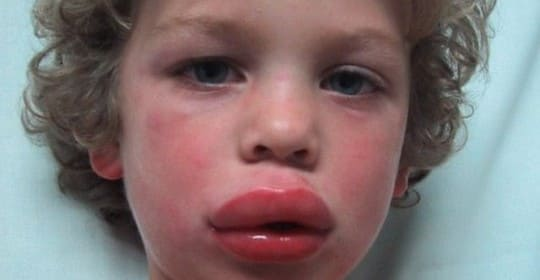
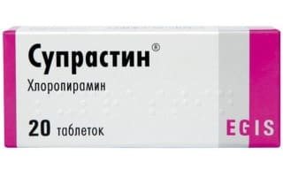

Аллергические реакции бывают разных видов и интенсивности, от умеренных до тяжелых. В этом разделе описана самая тяжелая форма аллергической реакции — анафилаксия, проявляющаяся крапивницей, сильным отеком рук, ног, лица, затруднением дыхания и глотания, чрезмерным слюнотечением, рвотой; человек хрипит, задыхаясь, ощущает слабость и головокружение.
Тяжелая аллергическая реакция (анафилаксия) может привести к шоку и опасному для жизни респираторному дистресс-синдрому. У людей с сильной аллергией анафилаксия может развиться за считаные минуты или спустя несколько часов после контакта со специфическим аллергеном, например, пчелиным ядом или арахисом. В принципе, любое вещество — включая пыльцу, латекс, некоторые продукты и медикаменты — может вызвать анафилактическую реакцию. Иногда причина анафилаксии остается неизвестной.
СИМПТОМЫ
СОВЕТ ДОКТОРОВ СИРС: БУДЬТЕ ГОТОВЫ Если врач выписал автоинъектор с адреналином, прочитайте сами и заставьте всех домашних прочитать инструкцию к нему до того, как он понадобится. |

КАК ПОДГОТОВИТЬСЯ
Заранее обсудите это со своим врачом.
Имейте при себе таблетку антигистаминного препарата, например, супрастин, лоратадин, прималан. Эти препараты длительного действия, обычно их принимают одновременно с адреналином, действие которого быстро заканчивается.

ЧТО ДЕЛАТЬ
Здоровье ребенка от докторов Сирс / Сирс У. и др.